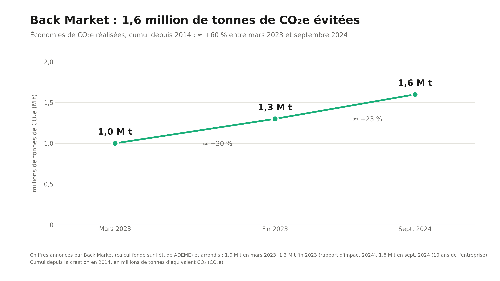

Impact Écologique et Empreinte Numérique
Découvrez comment le marché du reconditionné contribue à préserver les ressources naturelles et à réduire la pollution numérique.
Au-delà du simple choix de consommation, l'achat d'un appareil reconditionné s'inscrit dans une démarche globale de responsabilité numérique. En prolongeant la durée de vie de nos équipements électroniques, nous luttons activement contre l'obsolescence programmée et l'accumulation des déchets toxiques, tout en bâtissant un modèle économique circulaire plus durable. Pour mesurer concrètement l'ampleur de ces bénéfices environnementaux et comprendre comment le marché redessine les règles du jeu, découvrez ci-dessous notre analyse détaillée en chiffres, nos graphiques exclusifs et notre comparatif complet.
L'Impact en Chiffres
-82%
D'émissions de CO₂ par rapport à un smartphone neuf.
258 g
De matières premières brutes évitées par appareil.
80 L
D'eau préservée lors du processus de reconditionnement.
Voici une courbe représentative du CO₂ évité grâce au reconditionnement

Reconditionnement et Impact
| Critères | Appareil Neuf | Appareil Reconditionné |
|---|---|---|
| Empreinte CO₂ à la fabrication | Très élevée (~80kg) | Faible (~10kg) |
| Extraction de terres rares | Intensive | Nulle (Réutilisation) |
| Impact sur les déchets (e-waste) | Génération de nouveaux déchets | Réduction des déchets |